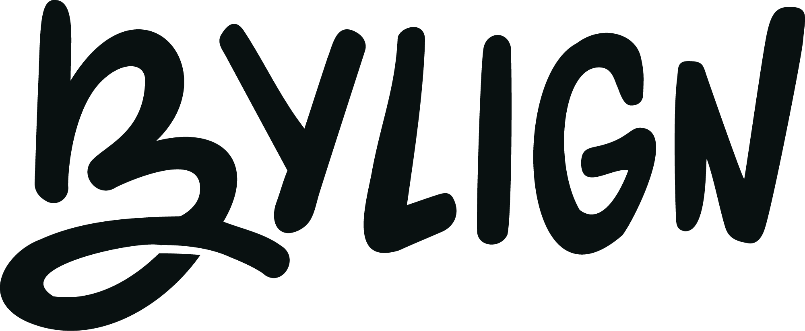

shayne@bylign.com// Services
- Copyediting
- Copywriting
- Social Media Strategy
- Project Management
- Audio & Video Editing
- Web Design
// About
Bylign is a creative studio that works with newsrooms, nonprofits, and independent journalists to elevate their work and expand their impact.
Founded by Shayne Nuesca.
Get in touch today.
shayne@bylign.com